Illustration similar – shows the product type.
Printed paper placemats and tray covers, 30 x 40 cm
Single-use paper placemats and tray covers with logo or motif for canteen, catering and topping-out events.
Printed placemats and tray covers keep tables clean in the canteen, site cabin and at topping-out events, absorb spills and carry the company's logo or notices at the same time. Professional product lies flat, has a non-linting surface and a print that does not bleed when damp; for trays the format must match the tray dimensions exactly. Because food can touch the printed side, German professional buyers expect inks under the German Consumer Goods Ordinance, a declaration of conformity under Regulation (EC) 1935/2004 with good manufacturing practice under Regulation (EC) 2023/2006, and paper from an FSC-certified source. For recycled fibre, evidence on mineral oil residues is added.
Technical data
| Size | 30 x 40 cm (placemat standard); tray covers to tray dimensions, compare against a sample |
|---|---|
| Paper | white or natural offset or kraft paper, approx.; 60 to 80 g/m², FSC-certifiable |
| Printing | offset or flexo, 1 to 4 colours (4/0), one side, logo or full-area motif |
| Surface | smooth or embossed, non-linting, embossing optional |
| Moisture behaviour | absorbent |
| Packing | stacked loose, typically 500 pieces per pack |
| Customs tariff number (HS) | 48239085 |
EU standards and regulations
VO (EG) 1935/2004Materials and articles intended to come into contact with foodVO (EG) 2023/2006Good manufacturing practice for materials and articles intended to come into contact with foodBedGgstV Anlage 14German Consumer Goods Ordinance: requirements for printing inks on food contact articlesBfR XXXVIBfR Recommendation XXXVI: paper and board for food contactVO (EU) 2023/1115EUDR: deforestation-free supply chains
Goes well with


More products in this category
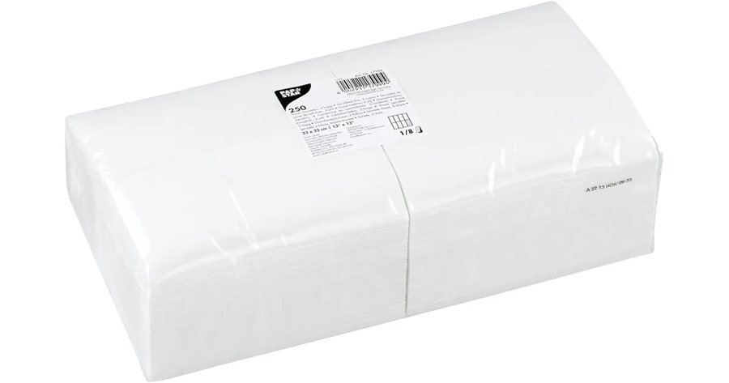
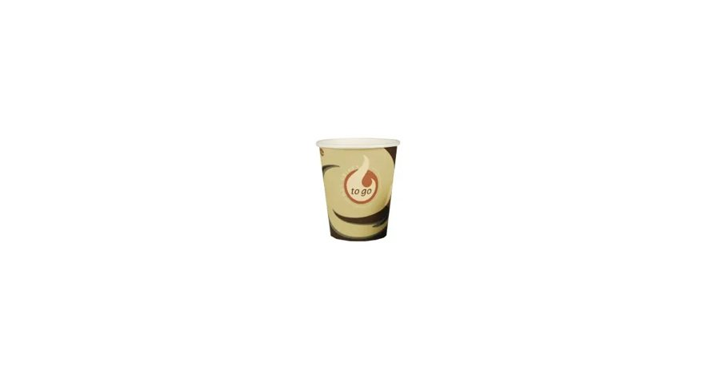
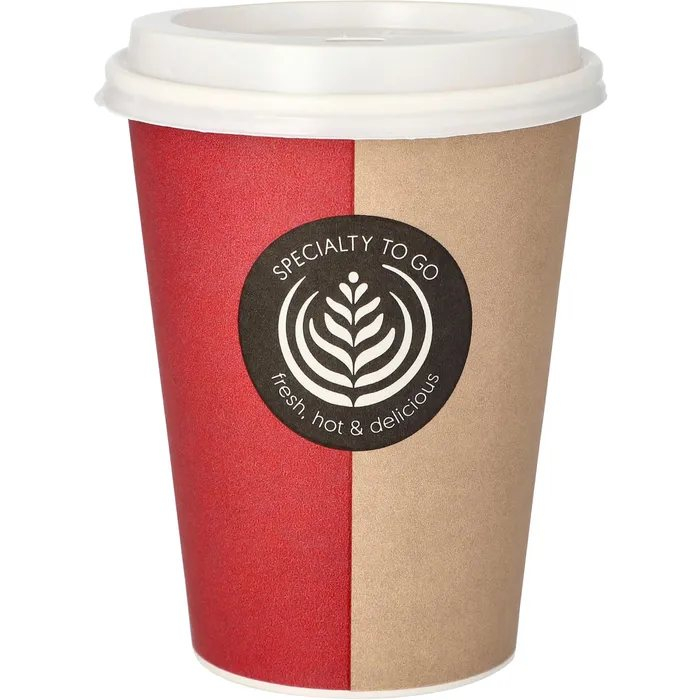
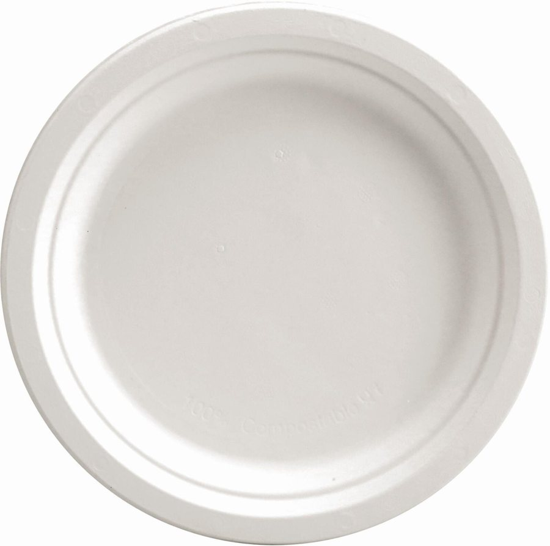
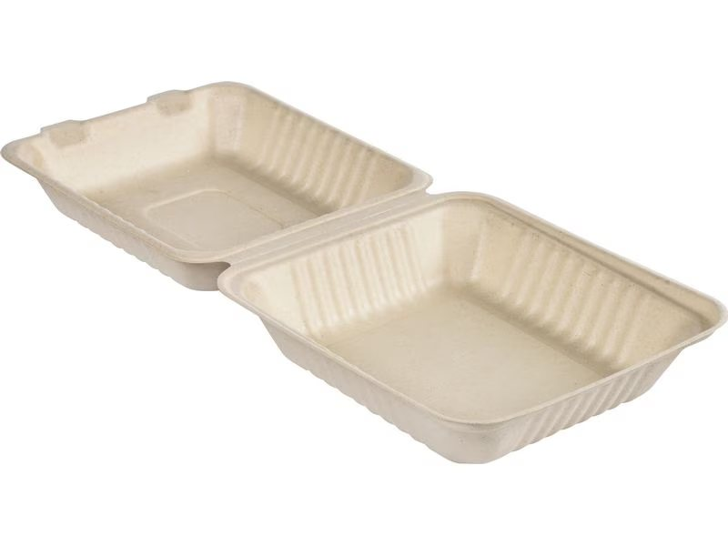
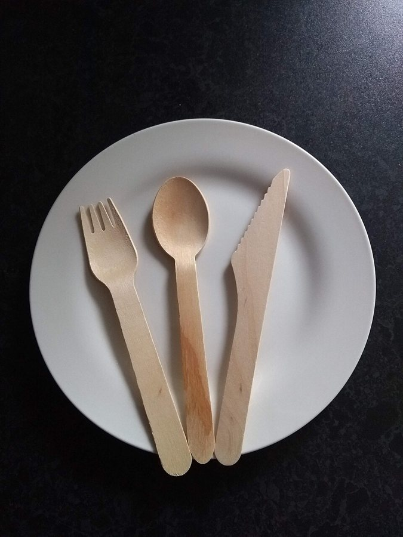
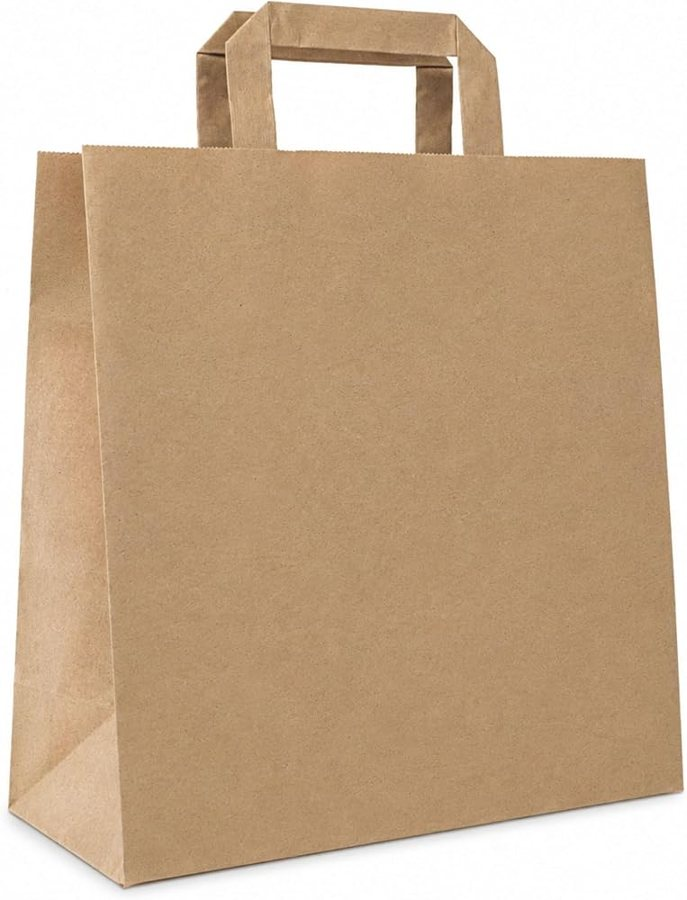
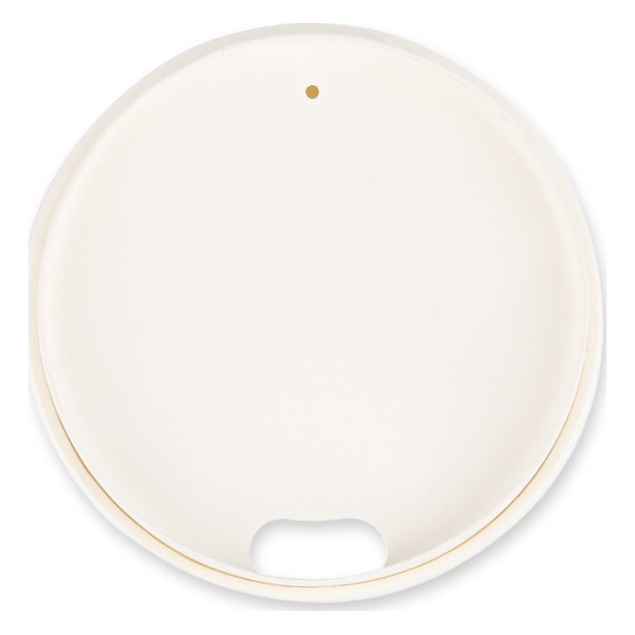
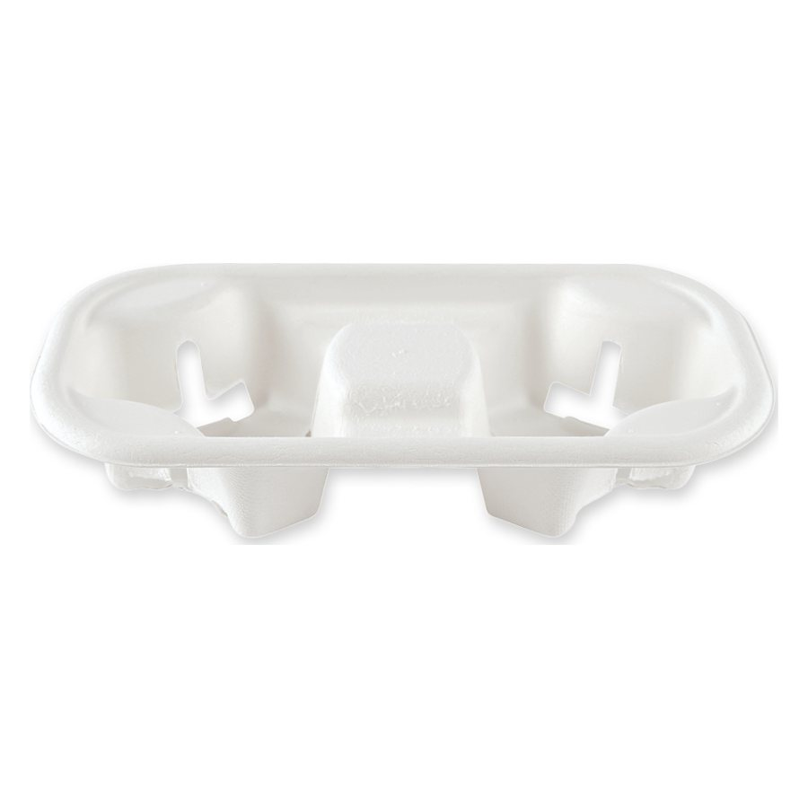
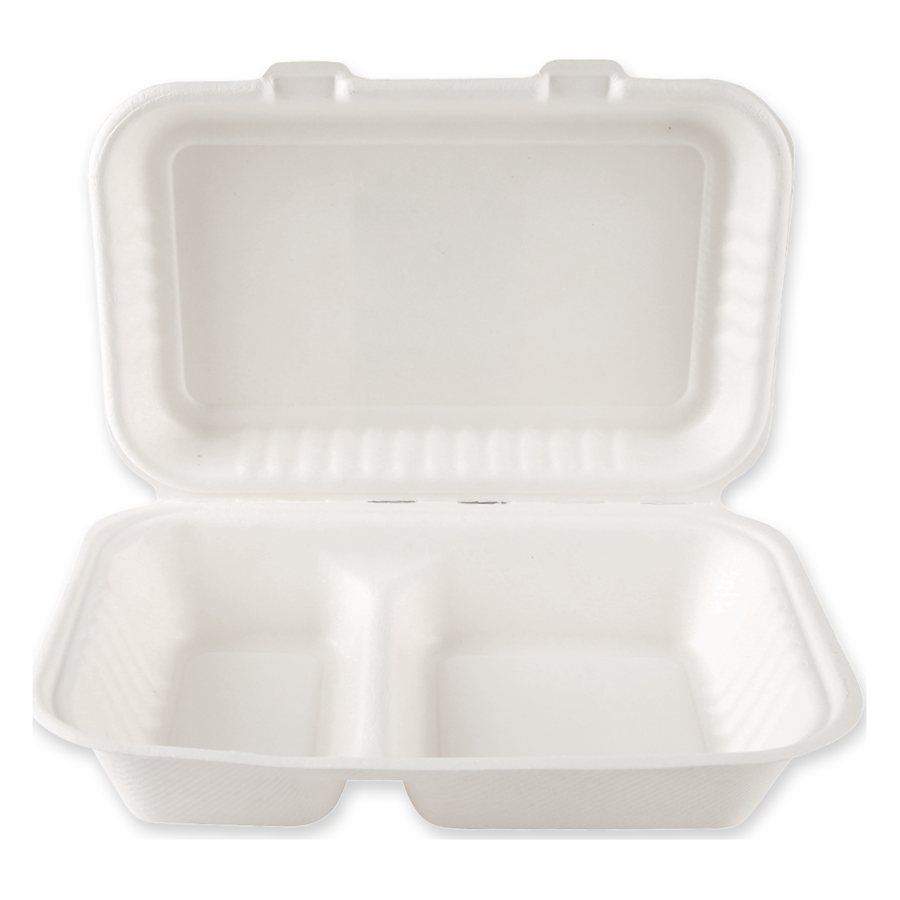
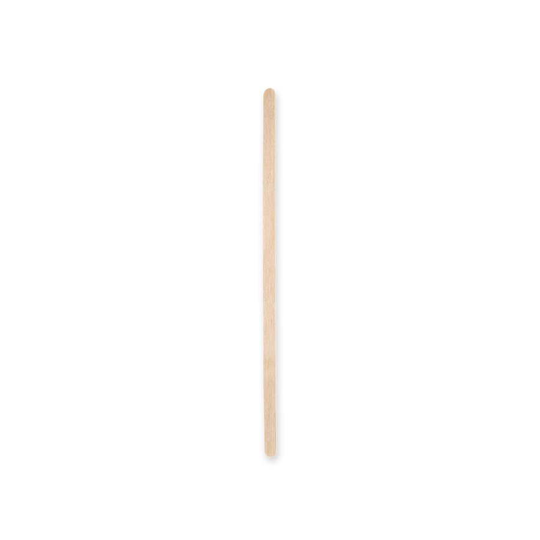
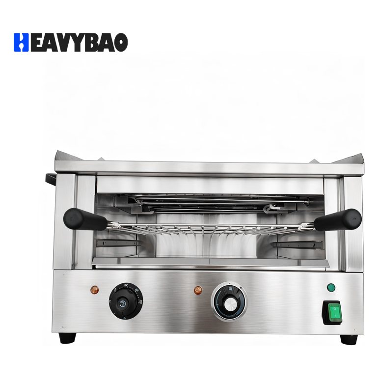
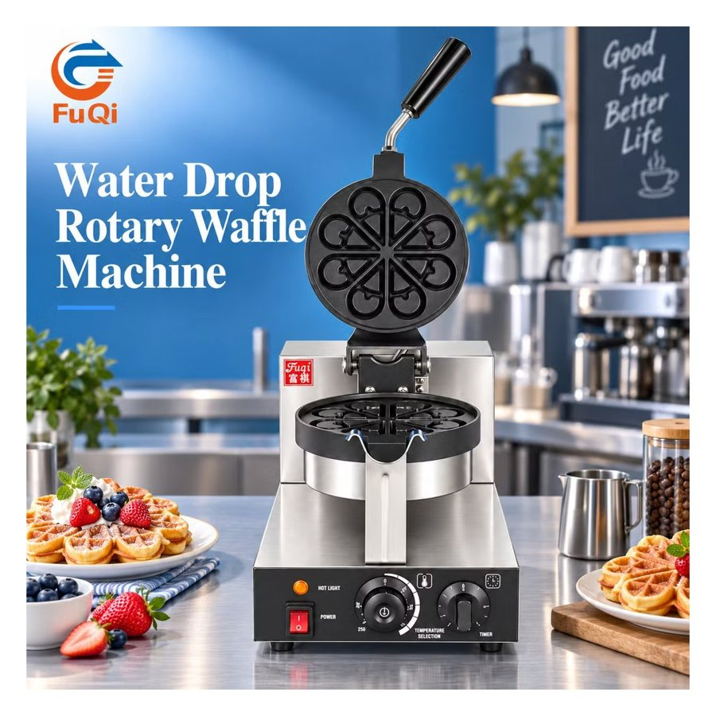
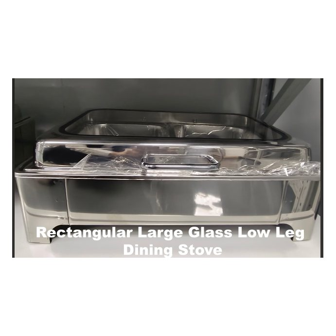
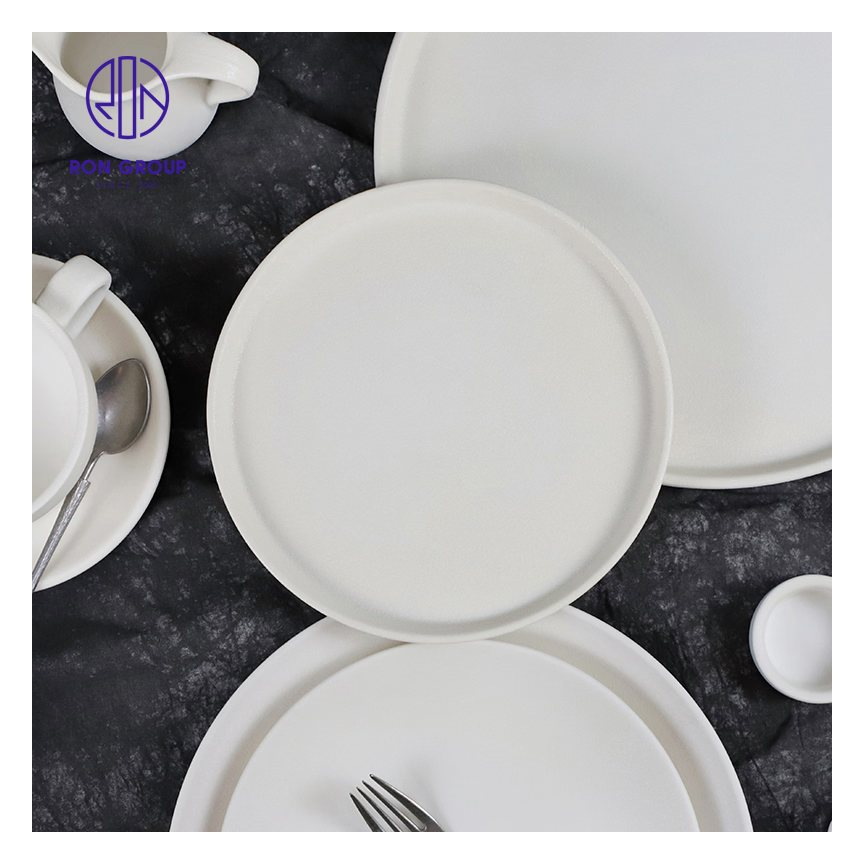
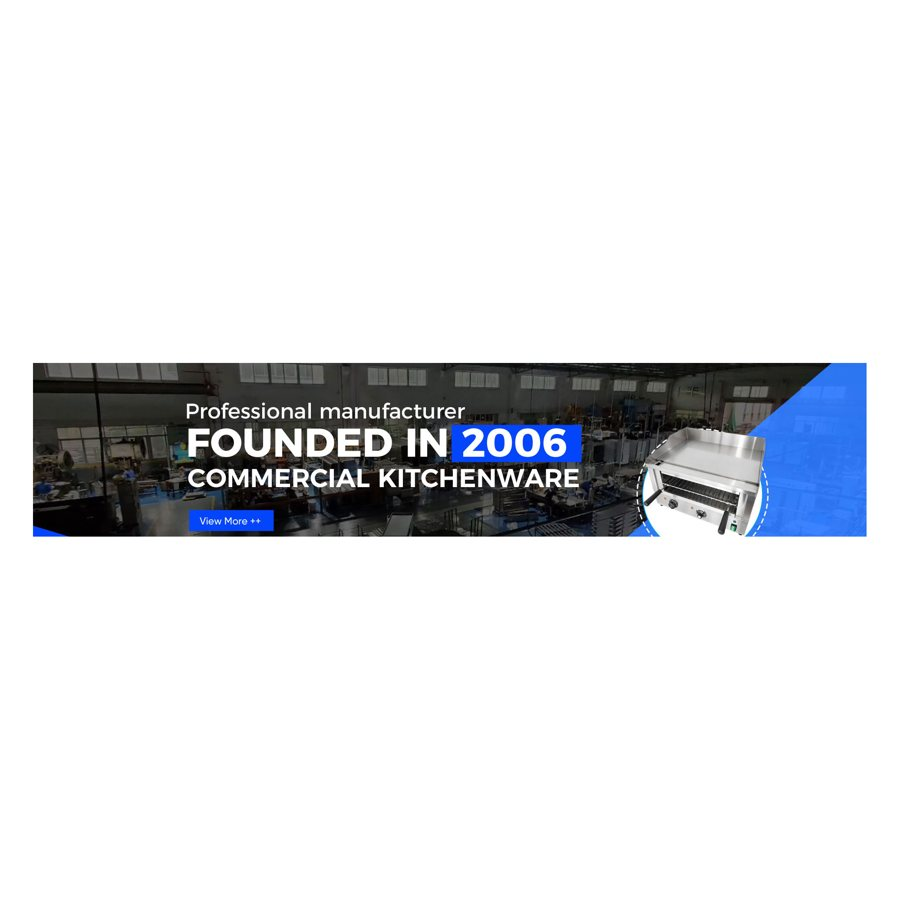